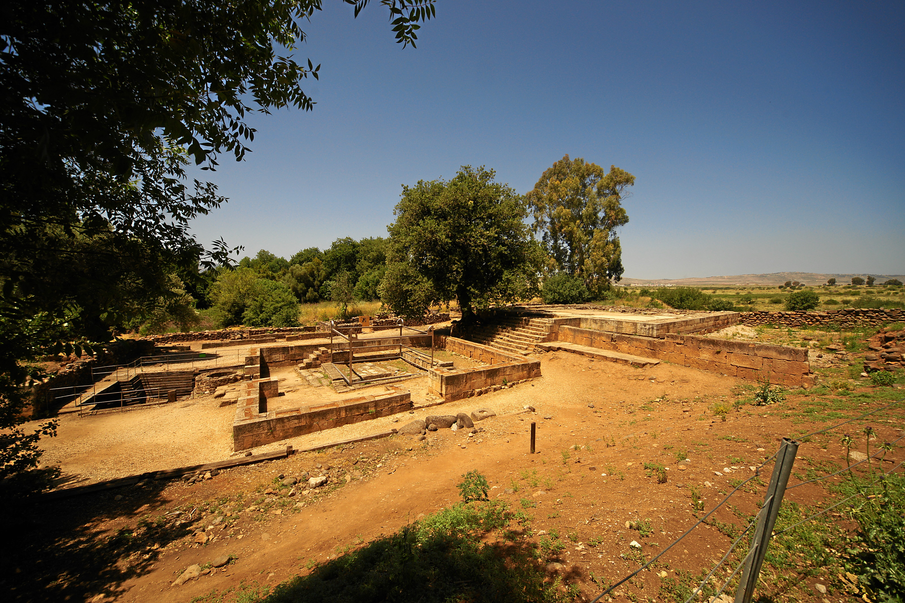

Tel Dan High Place

- Find Name
- Tel Dan High Place
- Historical Period
- Iron Age II
- Artifact Date
- 10th–8th centuries BC (high place platform)
- Date Discovered
- 1966–1999 (excavated)
- Discovery Location
- Tel Dan, Israel
- Current Location
- In situ, Tel Dan Nature Reserve
- Timeline Era
- Divided Monarchy
- Description
- The great raised platform and altar court at Dan, excavated by Avraham Biran, where Jeroboam set one of his golden calves and told Israel it was too much to go up to Jerusalem. This entry covers the high place structure only; the Tel Dan Stele, an inscription found at the same site, has its own entry.
- Biblical Significance
- Dan is where convenience became idolatry. A king who feared losing his people built them a nearer god, and the platform he raised still stands as a warning: worship shaped by politics, however grand its stones, is not worship of the LORD.
- Evidence Class
- Direct
- Interpretations
- Scholars broadly accept the platform as the high place of 1 Kings 12; the precise phasing of its construction across the 10th–8th centuries is debated.
- Scripture Illuminated
- Related People
- Related Books
- Related Places
Awaiting Review Not yet checked against scholarly sources. Treat its claims as provisional until this entry is reviewed. About verification
Last reviewed: not yet reviewed